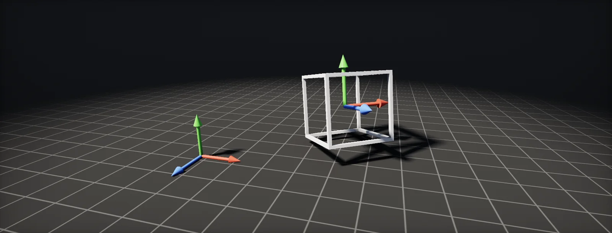

Coordinate Spaces
Every position in a shader is measured from somewhere. This unit follows one vertex from its mesh file to a pixel on screen, and shows the maths at each step.

One point, many coordinates
A position vector only means something relative to an origin and a set of axes. The same lamp bulb can be (0, 1.2) "relative to the lamp's own pivot", (6.5, 3.2) "relative to the centre of the level" and (1.4, 4.0) "relative to the camera". Each choice of origin and axes is a , and shaders constantly convert between them.
Move and turn the lamp. Its bulb never moves relative to the lamp, but its world and camera coordinates change:
The spaces you will meet, in the order a vertex passes through them:
- Object space (also local or model space): relative to the mesh's own pivot. This is what the mesh file stores.
- World space: relative to the scene's origin. Lights and other objects live here.
- View space (camera or eye space): relative to the camera, with one axis pointing where it looks.
- Clip space and NDC: after the camera's projection, where the screen edges sit at −1 and +1.
- Screen space: pixels.
Moving, turning and scaling with a matrix
Going from object space to world space means three things: scale the object, rotate it, then move (translate) it to its place. For a 2D point (x, y) that is:
Written as a grid of numbers, the same recipe is a . Each row says how to build one output component from the inputs; the numbers under the formula show the current matrix. A 3D transform is the same with one more row and column, a 4 × 4 float4x4.
The extra column holds the translation. To make it apply to points but not to directions, a fourth component w is added: 1 for positions, 0 for directions. A direction such as a normal should turn with the object, but moving the object must not change it:
Object to world to view to clip
A vertex shader moves each vertex through the whole chain with three matrices, multiplied one after another:
- Model matrix M: object space → world space. Built from the object's position, rotation and scale.
- View matrix V: world space → view space. The inverse of the camera's own transform: it moves the world so the camera sits at the origin looking down one axis.
- Projection matrix P: view space → clip space. Encodes the field of view and the near and far planes; the next chapter shows what it does.
Step through the spaces in the lab. It is always the same scene; only the origin and axes you measure from change.
Helpers in the SRP Core library do each step: TransformObjectToWorld, TransformWorldToView, TransformWorldToHClip, or all at once TransformObjectToHClip. HDRP renders camera-relative: its "world" positions are relative to the camera, which keeps them precise far from the origin (used in Rays, Spheres and Shaders).
The same Transform… helpers from Core.hlsl. In Shader Graph the Transform node converts between Object, World, View, Tangent and Absolute World.
The Transform and TransformPosition material nodes convert between Local, World, View, Camera and Tangent space. Unreal's Absolute World Position and Camera Relative World Position mirror the precision issue HDRP solves with camera-relative rendering.
Perspective: dividing by distance
Things look smaller the further away they are, in proportion to the distance: twice as far, half as tall. A camera turns a height y at distance z into a position on screen by dividing by z, then scaling so the edge of the field of view lands at 1:
The GPU splits this in two. The projection matrix produces clip space, where the fourth component w holds the distance z. After the vertex shader, the hardware divides x, y and z by w. That is the , and its result is (NDC): −1 at the left and bottom edges, +1 at the right and top.
Run it backwards and you get a ray: for a point on screen, the direction into the scene. That is how a full-screen effect finds a ray per pixel in From NDC to a view ray.
From NDC to pixels and back
NDC runs from −1 to +1; pixels run from 0 to the width. Halve, shift by a half, and multiply by the size:
The middle step, ndc · 0.5 + 0.5, is the screen UV, 0 to 1. Full-screen effects often go the other way: from the pixel to UV to NDC to a ray. One trap: in pixel coordinates and in Direct3D textures, y grows downwards, while NDC y grows upwards, so one of the steps flips y. Engines provide helpers that handle the flip for the platform; use them instead of writing it by hand.
Tangent space: a frame on every surface
Some data is easier to describe relative to the surface itself. A normal map says "tilt the normal a little towards +u" without knowing how the surface is oriented in the world. That needs a small set of axes at every point of the surface:
- N, the normal, out of the surface;
- T, the tangent, along the texture's u direction;
- B, the bitangent, along v, usually built as cross(N, T).
A tangent-space vector (x, y, z) becomes a world vector by walking x along T, y along B and z along N. The cross-section below shows T and N on a tilted surface; the normal map tilts the normal by the angle β:
Written as a matrix, T, B and N are its three columns: the . Mesh importers compute T per vertex from the UVs, which is why normal maps break when UVs are mirrored or tangents are missing.
Build it in Unity HDRP
Shader Graph does most space conversions with the Transform node, and C# has the same matrices. This exercise checks the chain from object space to pixels on the CPU, and uses the tangent frame in a graph. Written for Unity 6 with HDRP 17; Unity 2022 LTS works the same apart from a few renamed menu entries.
- Create the graph: in the Project window, Create > Shader Graph > HDRP > Lit Shader Graph. Open it and check the Graph Inspector > Graph Settings.
- Add a Position node in
Objectspace and use its Y to drive a gradient: it sticks to the mesh. Switch toAbsolute World: the gradient now stays put while the object moves. - Normal maps: Sample Texture 2D with Type set to
Normaloutputs a tangent-space normal. Connect it to the Normal (Tangent Space) block, or convert it with a Transform node (Tangent → World, TypeDirection) when you need it in world space for your own maths. - The Transform node's Type matters:
Positionuses w = 1 (moves),DirectionandNormaluse w = 0 (only rotate and scale; normals use the inverse transpose). - Save
Spaces.hlslto call the HDRP conversion functions yourself in a Custom Function. - Add
SpaceChain.csto an object, assign the camera, and use Log chain from the component's context menu. Compare the pixel it prints with the unit's widgets and withCamera.WorldToScreenPoint.
#ifndef ATLAS_SPACES_INCLUDED
#define ATLAS_SPACES_INCLUDED
// HDRP/Core space functions (SpaceTransforms.hlsl). In HDRP "WS" means camera-relative world space.
void ObjectToClip_float(float3 PositionOS, out float4 PositionCS, out float3 PositionAWS)
{
float3 positionRWS = TransformObjectToWorld(PositionOS); // camera-relative world
#ifdef SHADERGRAPH_PREVIEW
PositionAWS = positionRWS;
#else
PositionAWS = GetAbsolutePositionWS(positionRWS); // add the camera position back
#endif
PositionCS = TransformWorldToHClip(positionRWS); // view and projection in one step
}
void TangentToWorld_float(float3 NormalTS, float3 TangentWS, float3 BitangentWS, float3 NormalWS,
out float3 Out)
{
// world = x * T + y * B + z * N
Out = normalize(NormalTS.x * TangentWS + NormalTS.y * BitangentWS + NormalTS.z * NormalWS);
}
#endifusing UnityEngine;
// Logs one point through object, world, view, clip, NDC and pixel coordinates.
public class SpaceChain : MonoBehaviour
{
public Camera cam;
public Vector3 pointOS = Vector3.up; // a point in this object's space
[ContextMenu("Log chain")]
void LogChain()
{
if (cam == null) cam = Camera.main;
Vector4 os = new Vector4(pointOS.x, pointOS.y, pointOS.z, 1f); // w = 1: a point
Vector4 ws = transform.localToWorldMatrix * os; // model matrix
Vector4 vs = cam.worldToCameraMatrix * ws; // view matrix (looks down -z)
Vector4 cs = cam.projectionMatrix * vs; // projection (OpenGL convention)
Vector3 ndc = new Vector3(cs.x, cs.y, cs.z) / cs.w; // the perspective divide
Vector2 px = new Vector2((ndc.x * 0.5f + 0.5f) * cam.pixelWidth,
(ndc.y * 0.5f + 0.5f) * cam.pixelHeight); // pixels, origin bottom-left
Debug.Log($"object {os}\nworld {ws}\nview {vs}\nclip {cs}\nndc {ndc}\npixel {px}\n" +
$"Unity says {cam.WorldToScreenPoint(ws)}");
// On the GPU, GL.GetGPUProjectionMatrix(cam.projectionMatrix, true) adds the platform's
// reversed depth and y flip; the x and y in pixels end up the same.
}
}Everything in Spaces.hlsl is also available as nodes; the file is there for when you write longer functions that need several spaces at once.
Same nodes and functions (TransformObjectToWorld, TransformWorldToHClip); URP's world space is absolute, so there is no GetAbsolutePositionWS.
The TransformPosition and TransformVector nodes convert between Local, World, View, Camera and Tangent space. Remember Unreal is Z-up in centimetres, and normal maps use the opposite green channel (DirectX style).
Sources and further reading
The formulas and engine details in this unit come from these references. Engine documentation changes between versions.
- TutorialCoordinate SystemsJoey de Vries · LearnOpenGLModel, view and projection matrices with code, in OpenGL conventions.
- TutorialNormal MappingJoey de Vries · LearnOpenGLTangent space and the TBN matrix, built step by step.
- DocsCamera-relative renderingUnity · HDRP 17Why HDRP measures world positions from the camera.